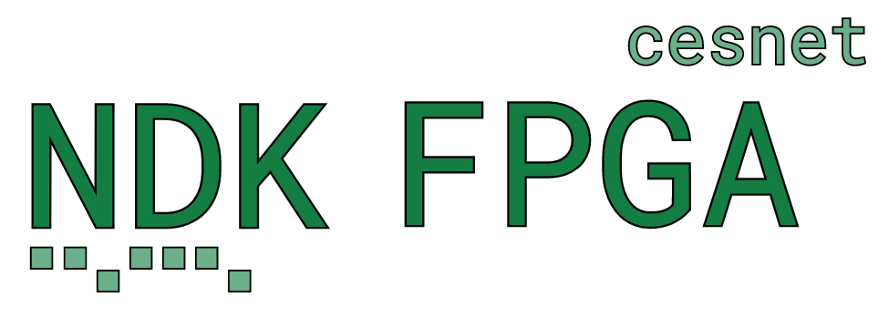

{kind=link}

Overview
The Network Development Kit (NDK) for FPGAs is a comprehensive framework designed for the rapid and efficient development of FPGA-accelerated network applications. Optimized for scalability and high throughput, the NDK supports speeds up to 400 Gigabit Ethernet.
The NDK provides a minimal example application. The NDK Minimal Application demonstrates how to build an FPGA application using the NDK and serves as a starting point for your own development. The minimal application doesn’t process network packets; it simply sends and receives them. If a DMA IP is enabled (see the DMA Module), the packets are forwarded to and from the host’s memory. Otherwise, DMA IP is replaced with a loopback and packets may be forwarded from RX to TX ethernet interface.
Other example applications will be added in the future, stay tuned!
Applications
In addition, the NDK provides a collection of reusable components, some of which are vendor and vendor- and tool-independent, while others are optimized for specific FPGA vendors and architectures. For transferring packets (frames) and auxiliary data at such high rates, the NDK uses its own set of what are called “multibuses” that can transfer multiple frames and values, respectively, within a single clock cycle. For details on these protocols, see the specifications for the Multi Value Bus and Multi Frame Bus.
To simplify module development, the NDK includes components for common operations on these buses, multiplexers, FIFOs, BRAMs and lookup tables. To improve compatibility with other popular buses, it also provides converters:
MFB to AXI stream,
MFB to Avalon stream,
MI to Avalon MM,
MI to AXI4,
MVB to MFB.
Reusable Modules Library
Bus Specifications
The NDK supports a wide range of FPGA cards, providing access to features such as DDR and HBM memories, PCIe, and Ethernet in your applications. However, different applications may only support a subset of these cards. A complete list of supported FPGA cards can be found below (minimal app supports all of them).
Supported Cards
NDK provides two implementations of DMA IPs:
DMA Medusa
DMA Calypte
DMA Medusa is a state-of-the-art DMA module that supports up to 400Gbps of throughput to host memory. DMA Calypte is an open-source low-latency DMA supporting throughput up to tens of Gigabits per second. However, the DMA Calypte is still under development and is not yet officially released (stay tuned).
Warning
The DMA Medusa IP is not included in the open-source version of the NDK. You can obtain the full NDK package, including DMA Medusa IP and professional support, from our partner BrnoLogic.
{kind=link}